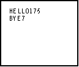

| HOME >> Tutorials >> Tutorial 12: Displaying Text |
Introduction:
In this tutorial, we will learn how to clear the graph screen and display text on it. You can display more text on the graph screen than on the home screen, because graph screen text is 3x5 pixels, while home screen text is 5x7 pixels.
New Commands:
| ClrDraw | Clears all drawings or text on the graph screen |
| Text( | Writes text on graph beginning at pixel (row,column) |
| AxesOn | Turns on graph axes |
| AxesOff | Turns off graph axes |
| FnOn | Selects all Y= functions or specified Y= functions |
| FnOff | Deselects all Y= functions or specified Y= functions |
| Text(row,column,text1,text2,...,text n) | FnOn [function#, function#,...,function n] |
| FnOff [function#, function#,...,function n] |
The Code:
| : | For AShell, SOS, and TI-Explorer |
| AxesOff | Turns the graph axes off |
| FnOff | Deselects all the Y= functions |
| ClrDraw | Clears the graph screen of all drawings |
| 7 |
Stores 7 into user variable B |
| Text(5,10,"HELLO ",157 | Displays "HELLO" and 157 starting at row 5 and column 10 |
| Text(12,10,"BYE ",B | Displays "HELLO" and B starting at row 12 and column 10 |

Further Explanation:
We need to turn the axes off and deselect all the functions so that they won't get in the way. If we didn't turn the axes off, they'd get in the way of the text, and the screen wouldn't be blank. If we didn't deselect all of the functions, if there were any, the calculator would display them and they'd be in the way of the text. When you run the program, "HELLO" and the value 457 are on the same line. This is very useful when you want to incorporate text with variables. That way you do not have to worry about spacing because the Text( command does it for you. If we were using Output( and trying to combine text with variables, we would have a problem. If we didn't know how long the variable was going to be (1 digit, 2 digits, etc.) we wouldn't know how far over to space the text. With the Text( command, we don't have to worry about it.
Conclusion:
Well, I feel that there's nothing else to show you because Text( is very similar to Output(. I already told you the few differences above. If you want to write several lines of text, the value for row in the second line, should be at least 7 more than the value for row in the first line. This will give you one pixel-line of blank space in between the two text lines. When you are making programs and you turn the axes off at the beginning of the program, you should always turn them back on at the end of the program. You really don't have to worry about turning the functions back on, but you should turn the axes back on. In the next tutorial, we are going to draw points on the graph screen.
If you do not understand a particular part in this lesson, have suggestions, or find any problems please contact me.
 |
 |
| Overview 2.0 | Tutorial 13 |